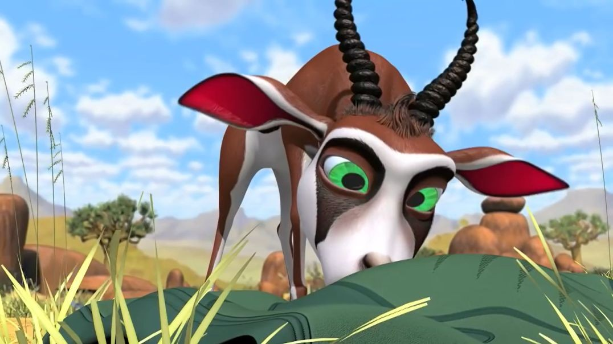

SPRINGBOK
The springbok or springbuck is an antelope found mainly in south and south-west Africa
The sole member of the genus Antidorcas.
The springbok is the national animal of South Africa.
WHERE WILL YOU FIND THEM?
You will find the springboks just beyond panda canyon